MAÍZ / CALDITO / TRADICIÓN
Pozole rojo
Desde $65Carne a elegir: pierna, lengua, cachete, oreja, pata, trompa o pollo.
MI $65 · CH $75 · M $85 · G $9501
Elige tu tamaño y tu carne.EL PARIÁN / SAN PEDRO TLAQUEPAQUE
Pozole, enchiladas y tostadas.
Una buena cena en el corazón de El Parián.
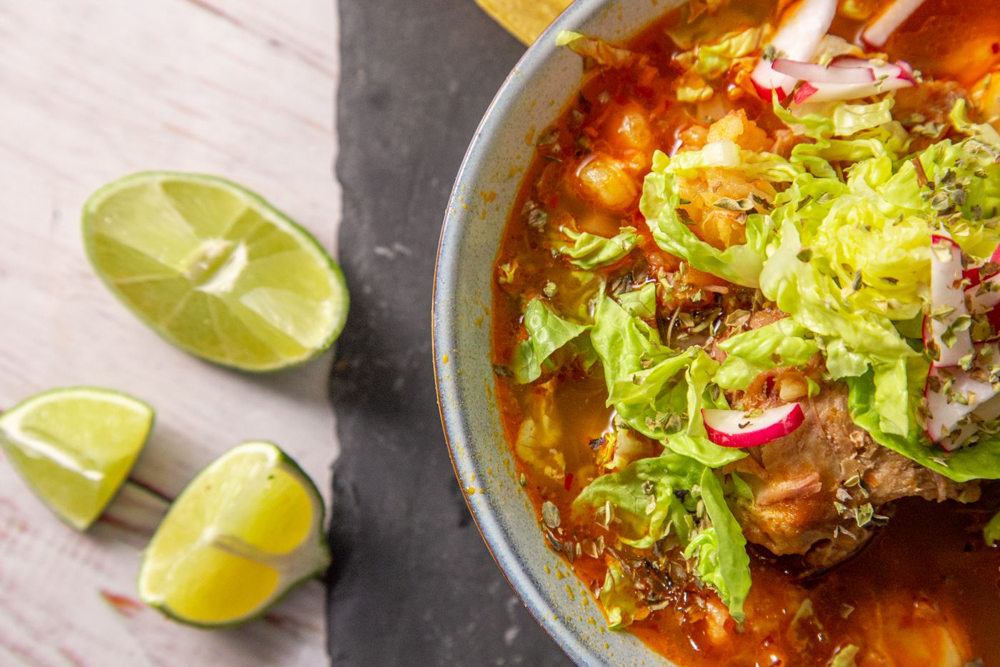
Los protagonistas de una buena cena.
Carne a elegir: pierna, lengua, cachete, oreja, pata, trompa o pollo.
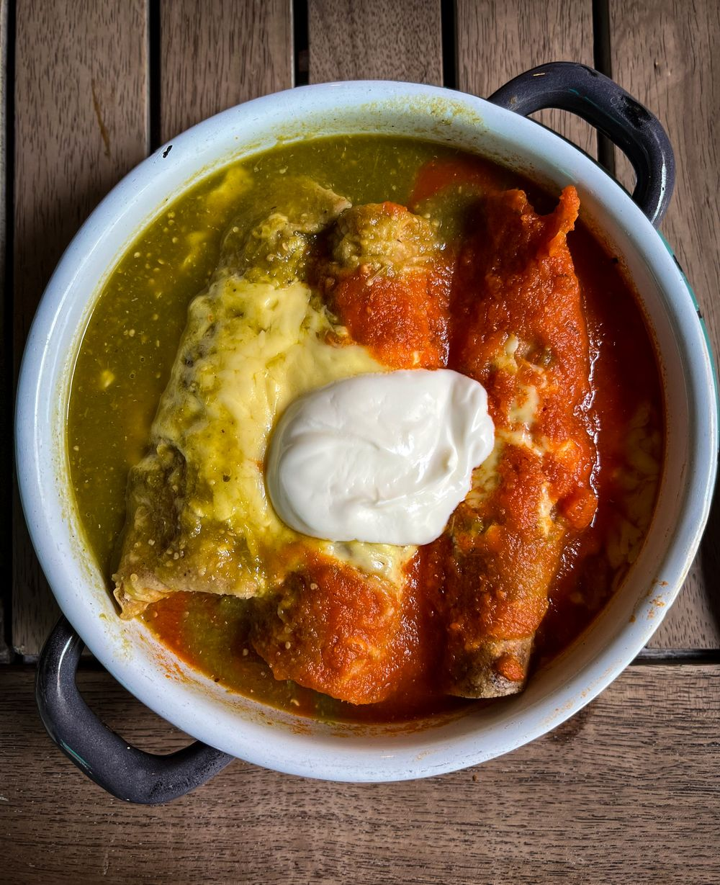
CON CARÁCTERRojas o verdes. De pollo, pierna, picadillo, res o sencillas.
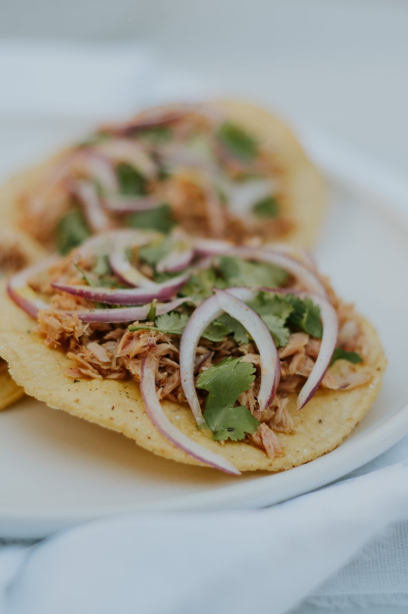
CRUJE BONITOPierna, cachete, oreja, pata, trompa o pollo: $75. Lengua, pata sin hueso o surtida: $85.
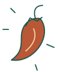
SALSAEl toque de carácter.De nuestra cocina a tu mesa.
Elige el antojo que va contigo.
Pierna, lengua, cachete, oreja, pata, trompa o pollo.
Pollo, pierna, picadillo, res o sencillas.
Pollo, pierna, picadillo, res o sencillas.
Pierna, cachete, oreja, pata, trompa o pollo. También lengua, pata sin hueso o surtida.
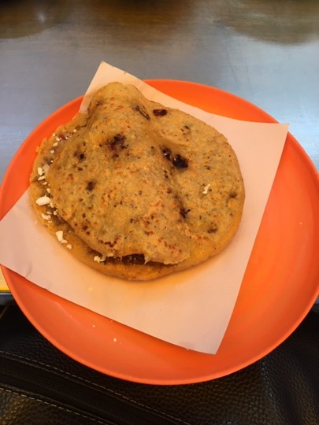
Pollo, pierna, picadillo, rajas, requesón, champiñones, chicharrón, papa o chorizo con papa.
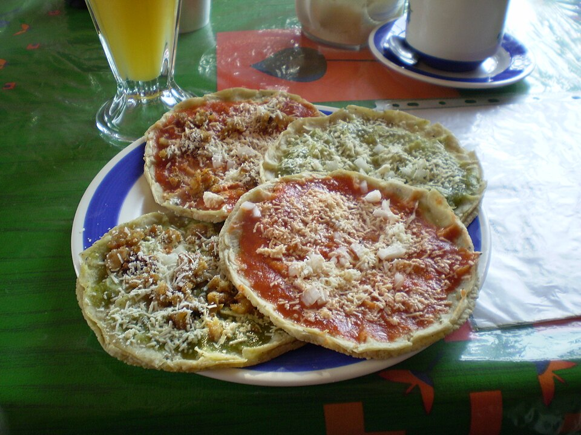
Pollo, pierna, picadillo, rajas, requesón, champiñones, chicharrón, papa o chorizo con papa.
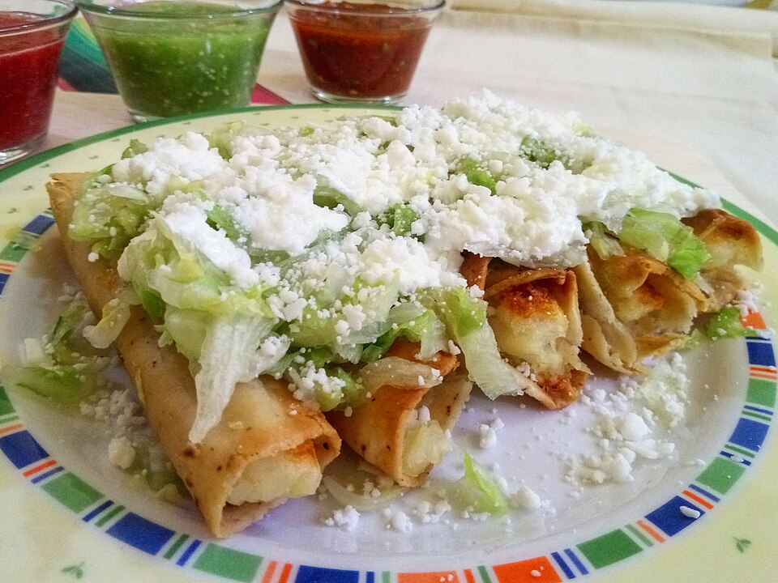
Pollo, pierna, picadillo, rajas, requesón, champiñones, chicharrón, papa o chorizo con papa.
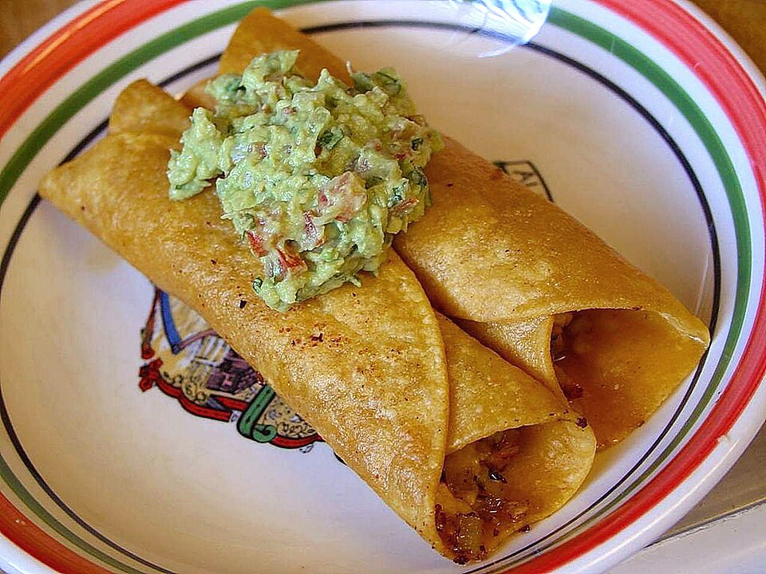
Pollo, pierna, picadillo, rajas, requesón, champiñones, chicharrón, papa o chorizo con papa.
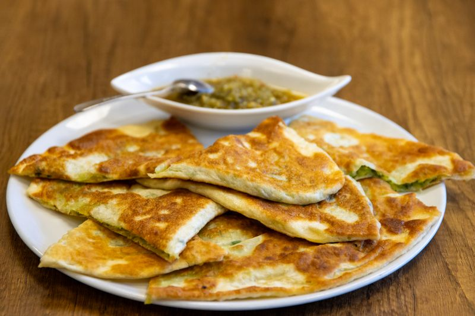
Pollo, pierna, picadillo, rajas, requesón, champiñones, chicharrón, papa o chorizo con papa.
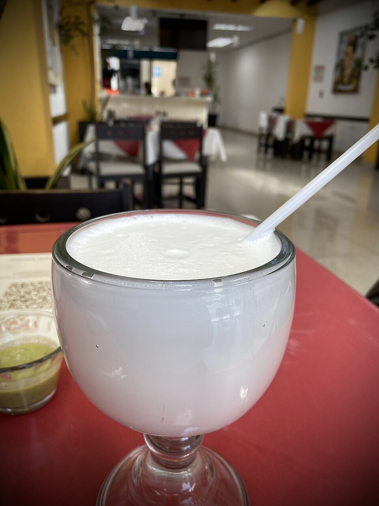
Pregunta por los sabores disponibles.
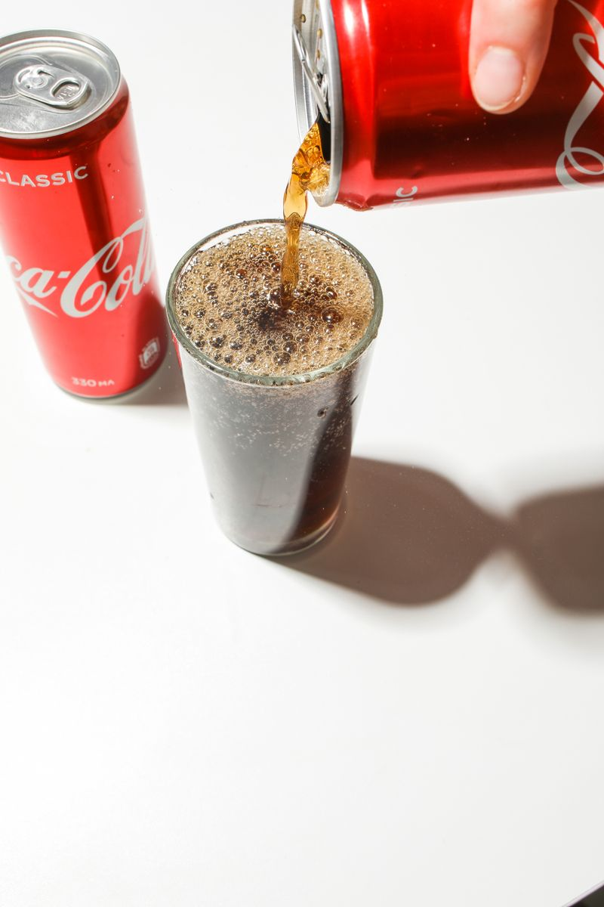
Presentación de 500 ml.
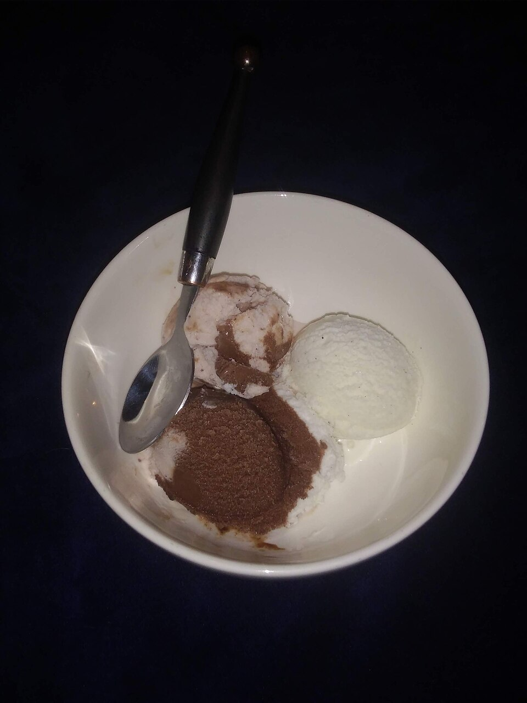
Pregunta por los sabores disponibles.
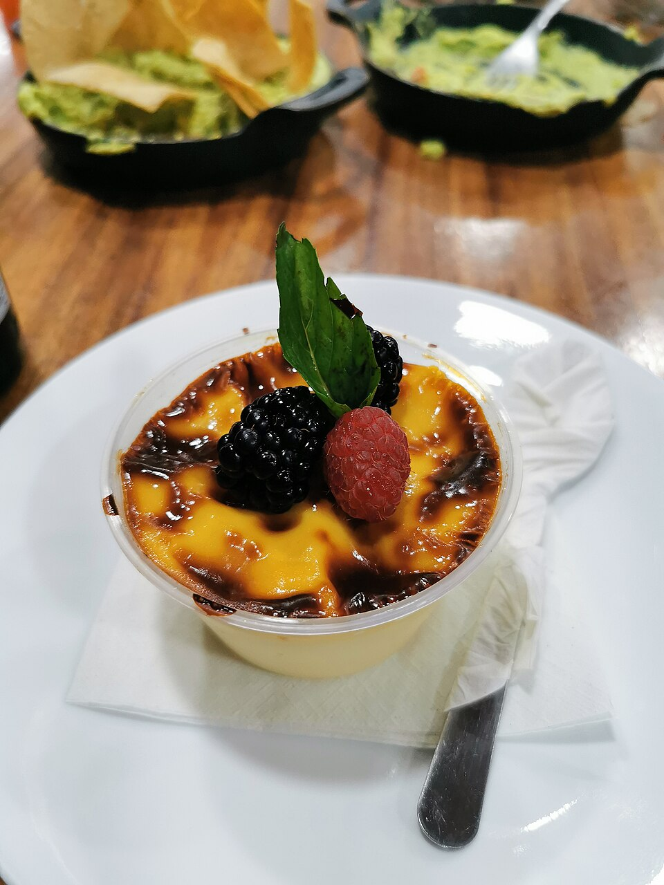
Postre a base de leche, azúcar, huevo, canela y vainilla, con una capa de azúcar caramelizada en la parte superior.
Fotografías de referencia; presentación e ingredientes pueden variar. Créditos fotográficos.
Quédate por los antojitos.
Alarga la noche con música en vivo.
Programación propuesta · Días y horarios por confirmar con el negocio.
Consulta la programación con nosotros ↗Limón, sal y una plática que se alarga.
Consulta marcas, presentación y precio.
Cerveza, limón, sal y salsas.
Bebidas alcohólicas · Solo mayores de 18 años.
Disfruta con moderación. Si tomas, no manejes.
BEBIDAS ALCOHÓLICAS
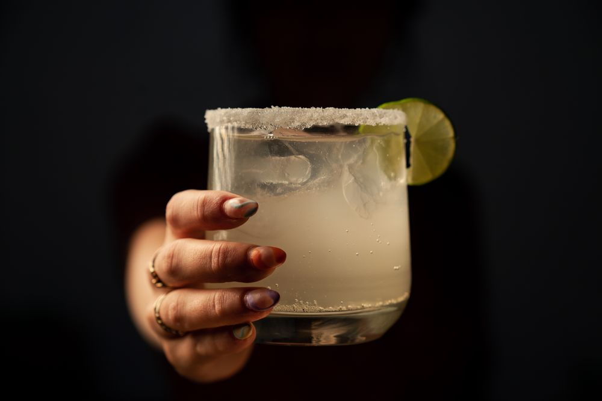
Servicio derecho.
Servicio derecho.
Tequila, toronja y un toque de limón.
Tequila, limón y licor de naranja.
Solo mayores de 18 años.
Disfruta con moderación. Si tomas, no manejes.
Pregunta por los sabores disponibles.
Presentación de 500 ml.
Helados y jericallas para cerrar la cena.
Pregunta por los sabores disponibles.
Postre a base de leche, azúcar, huevo, canela y vainilla, con una capa de azúcar caramelizada en la parte superior.
El Parián · San Pedro Tlaquepaque, Jalisco.
La ubicación exacta del local está pendiente de confirmar.
Cómo llegar ↗Pedidos a domicilio por WhatsApp.
Consulta cobertura, disponibilidad y costo de envío al hacer tu pedido.
El WhatsApp del negocio está pendiente de configurar.
Consulta ingredientes y alergias con nuestro personal.
Precios en MXN según la carta proporcionada. Fotos de referencia; la presentación puede variar.